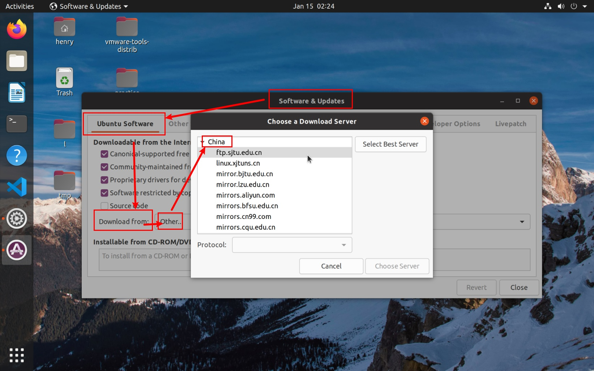
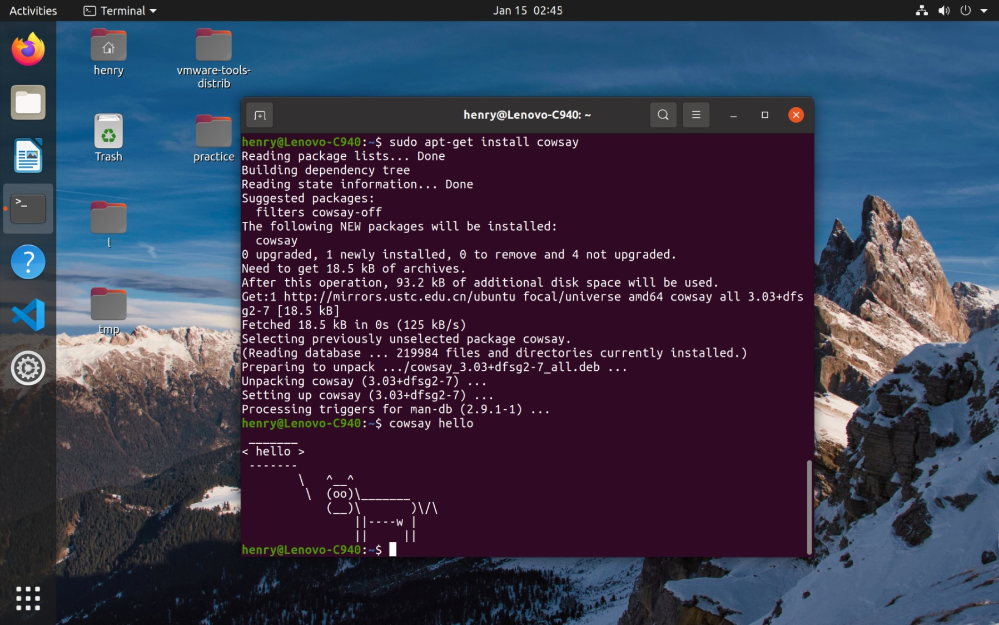

在 Windows 上的虚拟机中使用 Linux 系统
在开始本篇教程之前，需要读者：
- 掌握 Windows 下软件的获取与安装
- 从网络上查找并下载资料
- 使用命令行操作计算机
Ubuntu 是一个常见的 Linux 发行版。本文主要讲解在 VMware Workstation 中安装 Ubuntu 以及一些基本的使用。
链接里面讲到了一些知识，可以了解一下：《Linux就该这么学》第0章 咱们先来谈谈学习方法和红帽系统 - linuxprobe.com
为什么要使用 Linux？
自行了解
什么是 Linux 发行版？
自行了解
安装 Ubuntu 操作系统
Ubuntu 是比较常见的一个 Linux 的发行版，而且市场占有率较大。
获取安装介质
要使用 Ubuntu 操作系统，我们需要先获取其安装镜像。去官网上获取最新的安装镜像。
进入网站后，选择“下载”进入下载界面，下载 Ubuntu 桌面版。
注：也可以选择其他下载方式，比如 BT 下载等。
安装虚拟机软件
常用的虚拟化软件有 VMware Workstation Pro，Oracle VirtualBox 等，Windows 专业版系统还有自带的 Hyper-V。出于易用性等方面的因素考虑，建议使用 VMware Workstation Pro。
VMware Workstation Pro 不是一个免费的软件，如果觉得好用，可以考虑付费购买许可。
在虚拟机中安装 Ubuntu
安装好 VMware Workstation Pro 后，新建一个空白的虚拟机，选择“暂时不安装操作系统”。这一步就好像是在实体计算机中模拟除了一个新的计算机。
配置完毕后，在“虚拟机设置”的“CD/DVD 驱动器”中加载上刚刚下载好的安装介质（一般是iso光盘镜像）。这一步就好像是在虚拟的计算机的光驱中，放入了虚拟的光驱。
然后启动虚拟机。由于机器是空白的，默认从光盘启动，则会根据光盘中的程序完成基本的启动。随后，安装过程就会开始。
在设置用户名时，建议选择一个好记好写的用户名和密码组合。
配置镜像源
在常规安装时如果地区选择了“中国”，则这一步并不是必需的。
安装完成进入系统后，可以选择应用中的“Softwares & Updates（软件和更新）”，可以以图形化的方式选择镜像源。这里我们选择国内（China）的镜像源，这样在下载 package 时，速度会有显著的提升。

安装必要软件
Ubuntu 上默认的包管理器是 apt-get。（这里暂时不解释什么是包管理器）。
在应用程序列表中找到并打开“Terminal（终端）”，我们输入一下命令，先执行“刷新本地的包信息”的操作。
输入命令时，请注意命令中字符串之间的空格。
$ sudo apt-get update
如果读者是命令行的初学者，可以暂时不用思考命令的含义。我们将在下一章介绍命令行的使用。
命令中 sudo 的含义表示使用超级管理员权限，这样才能访问到一些普通权限下访问不到的资源。（如果不加 sudo，这一步操作会出现“permission denied”的问题）
输入命令后，会提示用户键入密码。注意，输入的密码并不会回显在终端上，只需要在输入完成后按 Enter 键即可。
之后命令行会闪过很多信息，等待操作完成后，我们再执行升级软件包的操作：
$ sudo apt-get upgrade
这之后便会下载需要升级的软件包，并进行安装操作，又会花费一些时间。
根据 Linux 的机制，安装后可能需要重启一下机器才能使更改生效。
接下来我们再尝试使用包管理器安装一个小应用：
$ sudo apt-get install cowsay
命令中 install 的后面跟的是要安装的包的名称（package name）。安装完成后，就可以使用 cowsay 了。
然后我们在终端中输入如下命令：
$ cowsay hello

接下来还可以安装构建所需要的工具：
$ sudo apt-get install build-essential
正如 build-essential 其字面上所表示的那样，执行命令将会自动安装构建所必要的若干软件包。
可能还需要安装 CMake：
$ sudo apt-get install cmake
安装 VMware Tools
安装虚拟机的增强工具会使得虚拟机的使用变得方便，比如文件拖拽、剪贴板共享等。点击 Workstation 的“虚拟机”菜单栏，按照步骤安装即可。
拓展阅读：
参考资料：喜大普奔！Hyper-V 和 VMWare 终于可以无缝共存、同时运行了！ - 简书 - jianshu.com